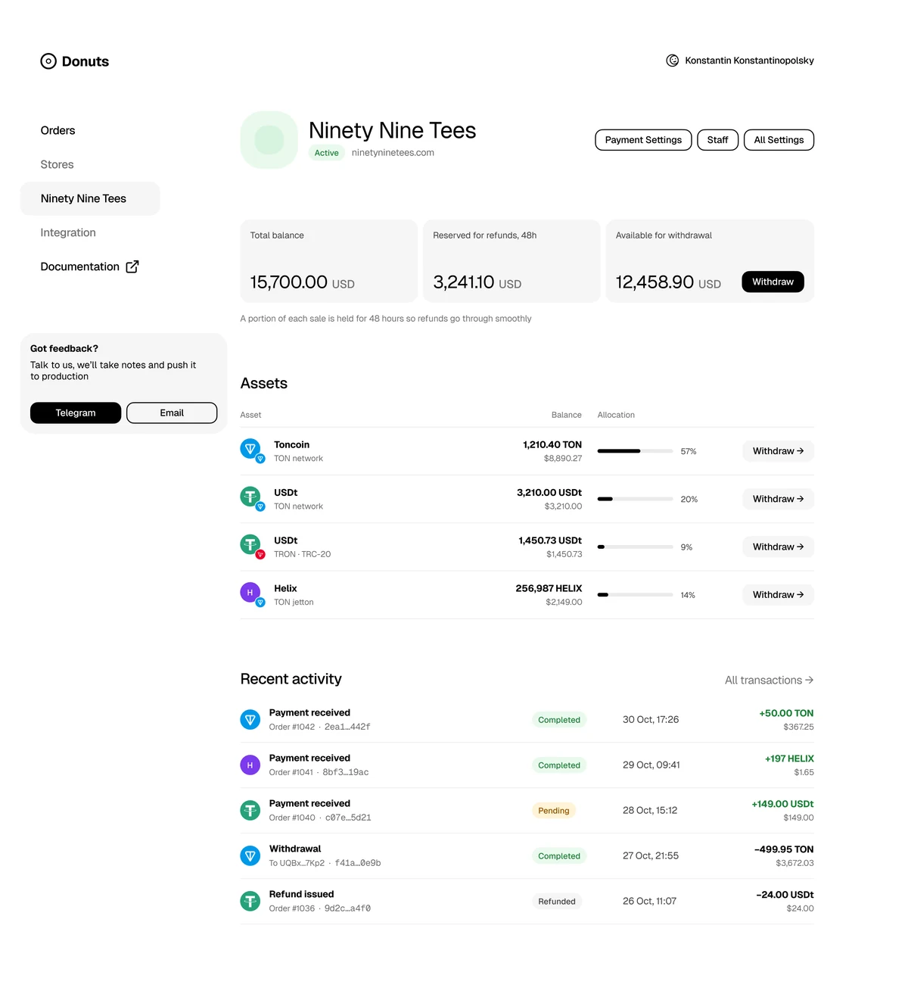
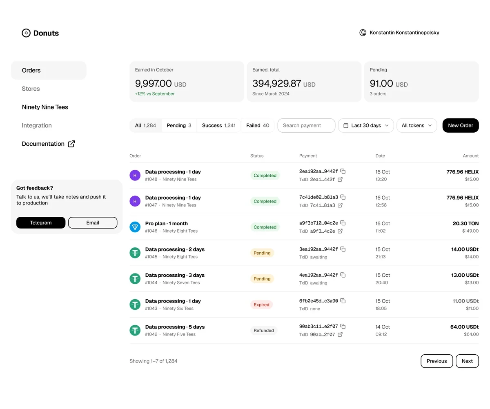

donuts.tg
Jul–Dec 2024Crypto payment gateway
- Founding designer
- Remote
- Web
Overview
donuts.tg let creators, streamers, and small merchants accept crypto payments on TON. Buyers could pay in almost any TON token, including volatile meme coins, and a crypto payment can’t be reversed, so the amount on screen had to be right at the moment of payment.
I was the founding designer and designed the product across three surfaces: the buyer checkout, the merchant dashboard, and the internal admin panel.

What I Did
- Designed checkout for volatile tokens: payment window, rate lock, re-quotes, and recovery from insufficient funds
- Designed the merchant dashboard: orders, balance, payment settings, integration, and staff roles
- Designed the internal admin panel: users and merchants, roles, sign-in, search and filters, stats, and payment history with commissions
- Interviewed merchants about accounting, tax reporting, and the payment processors they already used, and reworked the dashboard home around what they needed for their books
Checkout
- Two timers instead of one: ten minutes to pay, and a 60-second lock on the exchange rate, shown next to the dollar equivalent
- When the rate expires, the re-quote shows the old and the new amount side by side instead of silently changing the number
- When the wallet doesn’t hold enough, the screen says how much is available and offers to change the coin
- Payment by QR code or a connected wallet, with success and error states
- After design review, the token picker became a single list instead of separate “Popular” and “All tokens” sections
Crypto payments fail in ways card payments don’t. If the customer sends slightly less, the order stays open and asks only for the difference.
Merchant Dashboard
- The balance is split into what can be withdrawn and a 48-hour reserve for refunds, with a line explaining why
- Each order keeps its fiat value and the exchange rate with the time it was locked, which is what accountants and tax reports need
- Accepting every TON token requires confirming a warning that some are highly volatile
- API keys are shown once and can be revoked; webhooks, redirect URLs, and a choice between API and CMS-plugin integration
- Staff roles, with a confirmation that lists what a promotion to administrator grants
- A store can’t be deleted while it has active transactions or a balance

Outcome
donuts.tg launched in beta and processed live payments from real merchants. Merchants then asked for networks beyond TON, and the next step required a banking license; the company closed in December 2024 when funding ran out.